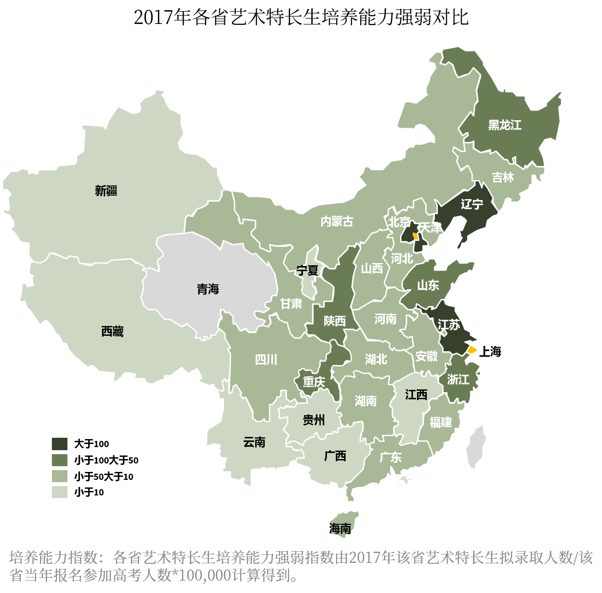
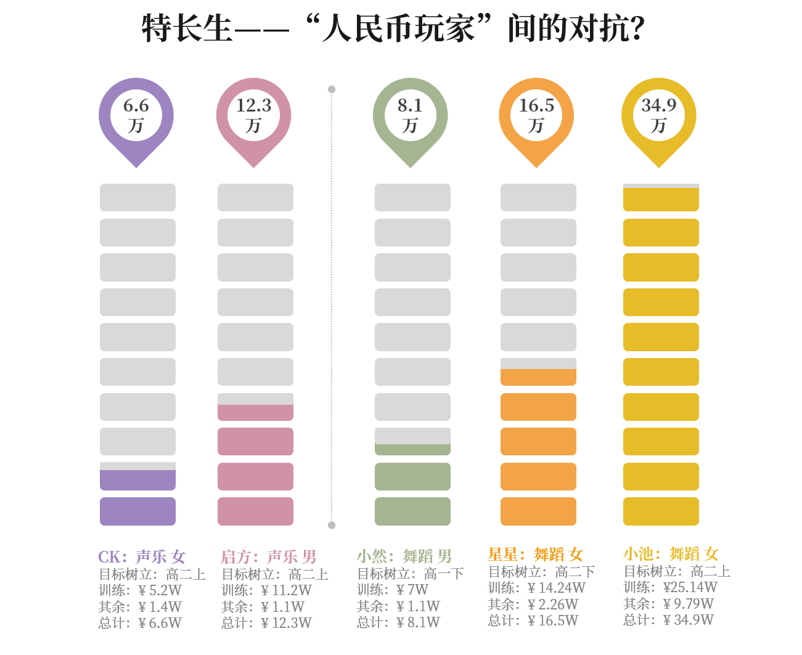
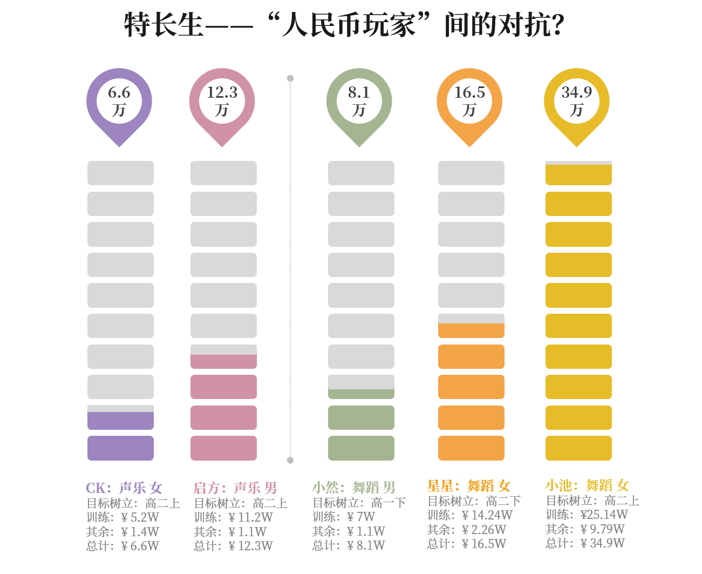
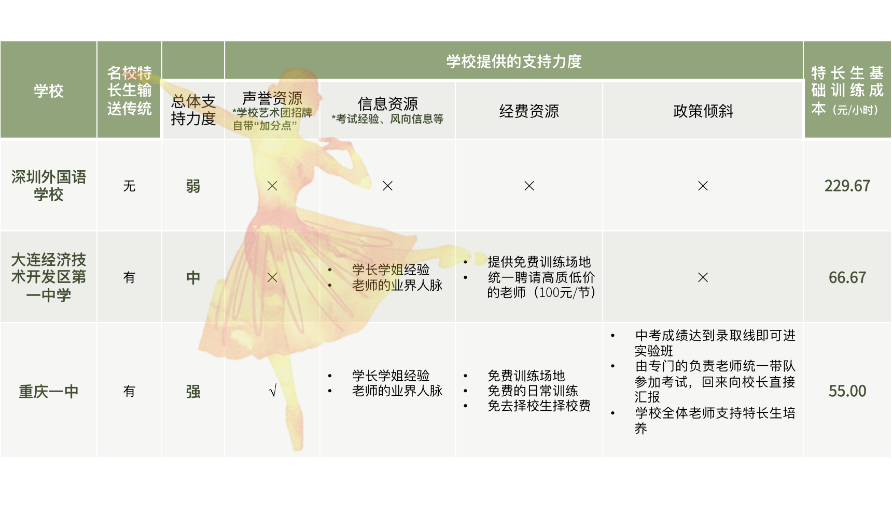

清晨5点半起床，7点到校早自习，晚上7点半放学。放学后，接受高强度舞蹈集训3小时，再回家写作业，几乎每天都要凌晨1点以后才能上床。
这是某重点中学高三女生娜娜一天的日程表。
自2004年开始，教育部规定艺术特长生高考可享受降分政策。
经过选拔，考生可享受到20分-60分不等的降分录取优惠，表现突出的考生甚至会被降至一本线录取。特长生在进入高校后都在业余时间服务于学校的各文体团体，是高校一支重要的文化生力军。
这对于“分分小命根”的考生们来说，无疑是一块叩开名校大门的敲门砖。高校艺术特长生测试的报名人数也是年年攀升，竞争非常激烈，特别在清北等重点大学，考生录取比例能达到几百比一。
这条路，到底是捷径还是另一条艰辛的独木桥呢？

2014年之前，每所高校招收的艺术特长生人数平均在15人左右，并由逐年上升趋势。
2014年，为了促进教育公平，国务院发布关于深化考试招生制度改革的实施意见。要求改革招生录取机制，大幅减少、严格控制考试加分项目，2015年起取消体育、艺术等特长生加分项
政府这一举措明显反映在数据上——14年开始，艺术特长生的招收人数大幅缩水，2017年更是达到历史最低人数。
数据告诉我们，2014年前，艺特的竞争程度在逐年下降。而随着政府政策收紧，高校名额明显收缩，导致艺术特长生的竞争激烈程度逐年上升。
通过艺术特长进名校，正在变得越来越难。

细数全国近4000名艺术特长生，他们广泛地分布在全国30个省。
从上图可知，主要的艺术特长生集中倾斜在 北京、辽宁、上海、江苏几个强势省市，近似“二八定律”分布。
北京，作为素质教育导向和教育资源优势省份，每1000个高考考生中就有近7人通过艺术特长生降分进入大学，远远超过其它省市。

从整体上看，艺术特长生的男女性别比基本平均，女生比男生稍微占优势一些。
但是在具体的艺术类目上，因为地域文化、资源条件不同，各省有自己的优势项目。

全国舞蹈特长生最密集的两个地区是辽宁和北京。但有趣的是，北京的“舞特”以女生为主，辽宁的“舞特”中则男生占据了压倒性的优势。
经过采访发现，辽宁省尤其大连市的一些重点高中，考虑到舞蹈这个项目中女生竞争比较激烈，所以会从高一入学开始选拔身体条件较好的男生给他们开设舞蹈班，逐渐形成了独特的“大连男子”现象。
民乐类艺术特长生的分布也很有意思。江苏、辽宁和山东成为前三名的“民乐大省“。而民乐项目中，二胡和唢呐是山东的强势项目，琵琶和竹笛成为江苏民乐考生的主体。这个现象和当地的民间文化有着密不可分的关联。
总体上看，乐器类特长生占比近七成，是特长生中的绝对“主力军”。辽宁考生更擅长声乐和表演，北京的考生更多地选择了优雅的西洋管弦乐。


高中对名校自下而上的特长生输送也有明显的集中趋势。0.15%高中占据了近20%的输送实力，并且头部学校优势明显。
可以看出，艺术特长生也存在着“超级中学”的现象。如西安市铁一中学、山东省潍坊一中、大庆实验中学、大连二十四中、北京二中等，有浓厚的艺术生培养风气，每年向各大高校输送人才
备注：中学艺术特长生输送实力值=2017年中学向各高校的输送总人数*高校权重（C9学校=4，985学校=2，211学校=1）
 

通过对5名艺术特长生的访谈发现，艺术特长生之路存在一定的经济门槛，培养成本较高，其中最大的开销在于艺术特长的日常和突击训练。
超级中学能给予学生最大的帮助恰恰就在艺术特长的训练上面，通过上表可知，学校的支持能够较大程度降低学生的基础训练成本。
此外，超级中学能够给予的支持还包括声誉资源、信息资源和政策上的倾斜，这些都为艺术特长生的考试之路带来正向的推动力。
数据告诉我们，艺术特长生这条路上，有太多的机缘和运气，每个渴望踏进名校的考生身上被倾注了大量的社会资本和财力。高校受政策影响收紧招生名额，资源向个别省市和“超级高中”倾斜，势必都让艺术特长生这条看似捷径的路充满艰辛和汗水，也让教育公平的目标受到阻碍。 我们希望，让教育回归智慧和能力的公平选拔，让艺术成为人生中纯粹的陶冶和享受——因为艺术和知识，都本应是精神的避风港。